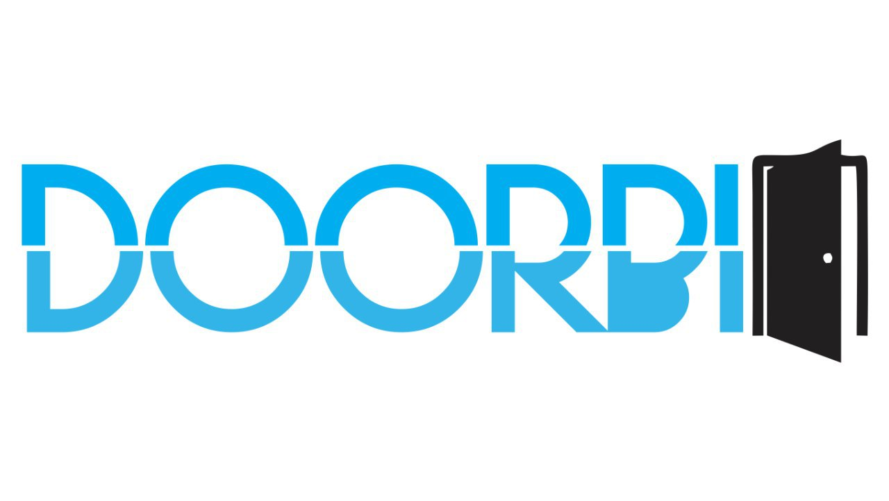

Nuestros objetivos
Introducción general... El día a día de una persona es algo cansado, agitado, tanto así que ahora queremos tener todo a nuestro alcance, con toda comodidad encontrar una solucion a aquellas cosas que no controlamos.
Problematica... La vida de las personas, tanto como la de usted y la mía es muy agitada, la mayoría del tiempo no estamos en casa o nos encontramos concentrados en nuestro trabajo, los timbres de puerta que hay no son suficientes para suplir esta necesidad y menos a un costo accesible a las personas, ademas la inseguridad aumenta, así como las visitas no deseadas.
Justificación... Hacer un mundo mas conectado, tener el control de su vida en un solo lugar, automatizar procesos.
Argumentos... El internet de las cosas, se refiere a una interconexión digital de objetos cotidianos con Internet. Alternativamente, Internet de las cosas es la conexión de internet con más cosas u objetos que con personas.
Por que deberian comprar nuestro producto... Ofrece una alternativa accesible para cualquiera que este interesado en un dispositivo IoT
Ayudar a la gente a simplificar algo su vida.
Internet de las cosas (IoT)
La internet de las cosas (IoT, por sus siglas en inglés) es un sistema de dispositivos de computación interrelacionados que tienen identificadores únicos y la capacidad de transferir datos a través de una red, sin requerir de interacciones humano a humano o humano a computadora.
Tu hogar puede formar parte de eso ahora!
Redes sociales